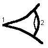

Cette page reprend l'aide d'OptGeo 3.03, écrite pour un ordinateur et une souris, adaptée à la version web : les gestes (au doigt ou à la souris), les boutons et les menus décrits sont ceux de cette version. Mode d'emploi détaillé : Utiliser OptGeo sur le web.
Œil stylisé

Définition
Il est défini, à la construction, par les points 1 (rétine) et 2 (centre pupille). Toutes les parties de cet œil sont absorbantes.
L'œil peut être ajouté :
- en touchant (ou en cliquant) le bouton « Œil » de la palette des objets (famille « Écrans »), puis en plaçant le point 1, puis le second (voir Placer un objet).
OU
- menu « Ajouter (par coordonnées) », puis « Œil stylisé » (sous « Divers ») : le panneau des propriétés s'ouvre, déjà rempli, et le bouton « Valider » ajoute l'élément.
Remarque : cet œil est optiquement inactif, il ne sert pas à représenter le cheminement des rayons jusqu'à la rétine.
Options
On peut imposer
- l'épaisseur des traits du bord de l'œil
- la couleur de l'œil (c'est-y-pas mignon tout plein...)
Ces propriétés peuvent être rendues accessibles :
- à la construction de l'œil si on passe par le menu « Ajouter (par coordonnées) »
- à tout instant en touchant (ou en cliquant) l'élément pour le sélectionner, puis le bouton « Propriétés » de la barre qui apparaît en bas du dessin ; le panneau des propriétés s'ouvre, son bouton « Valider » applique les modifications et « Annuler » les abandonne. On peut aussi toucher le bouton « Propriétés » de la barre du haut, puis l'élément : ce mode reste actif jusqu'au bouton « Terminer » du bandeau de consigne (ou la touche Échap).
Divers
Quand ses poignées sont affichées (œil sélectionné, ou mode « Déplacer »), on peut :
- translater l'œil en le prenant par la rétine (croix verte)
- changer son orientation et sa taille en utilisant l'autre point (cercle bleu, au centre de la pupille)